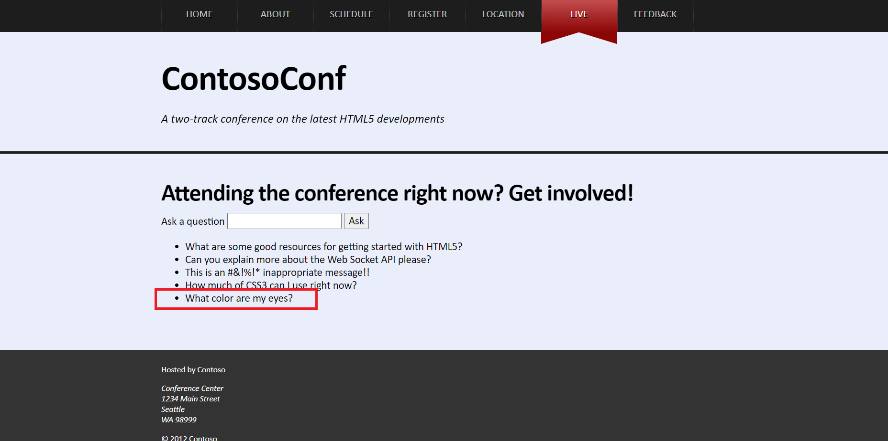

Module 13: Implementing Real-time Communication by Using Web Sockets
Lesson 2: Using the WebSocket API
Demonstration: Performing Real-time Communication by Using Web Sockets
In the "Ask a question" box, type "What color are my eyes?"", and then click "Ask"

In Solution Explorer, expand the "ContosoConf" project, expand the "scripts" folder, and then double-click "LivePage.js".
Point out the following methods: